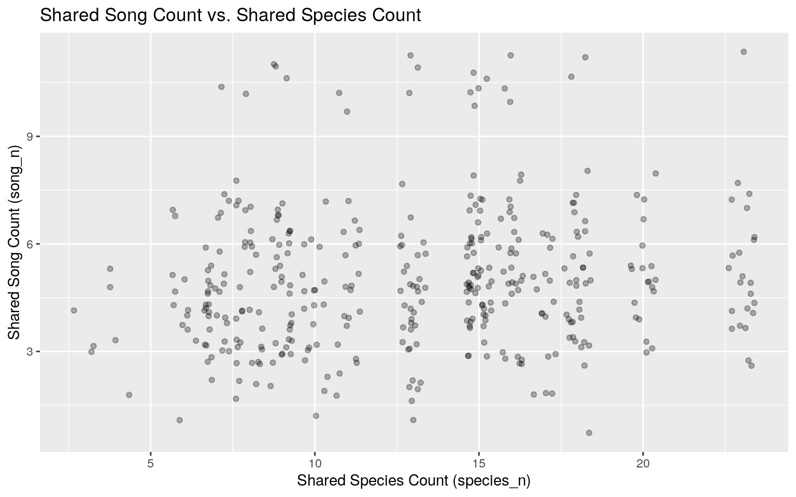
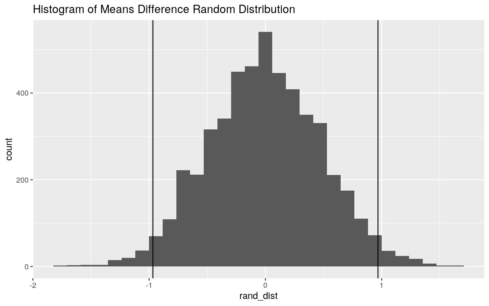
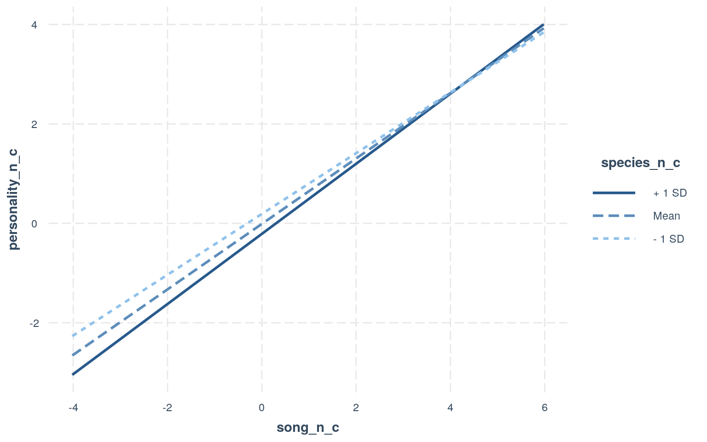
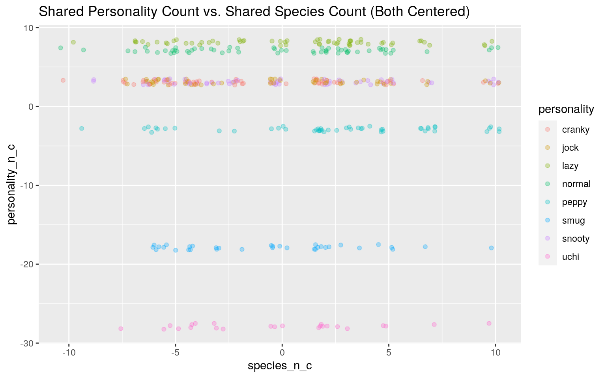
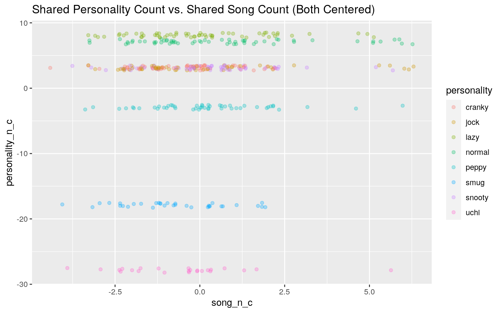
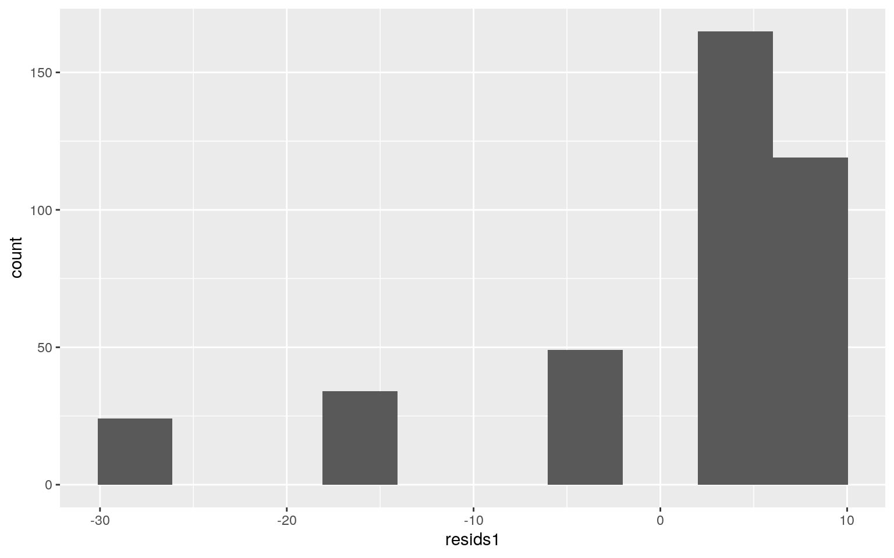
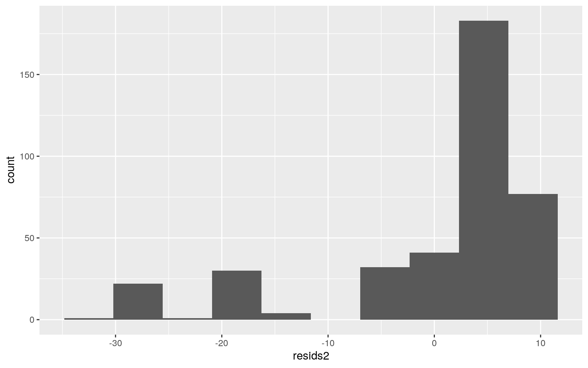
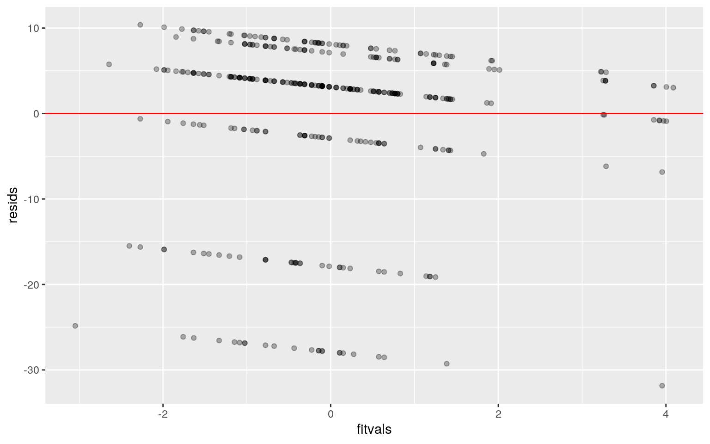
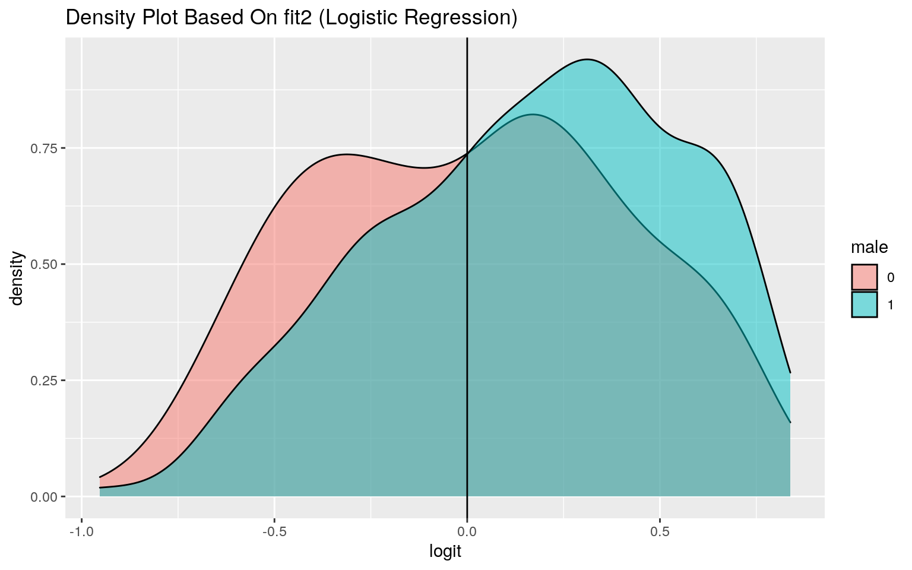
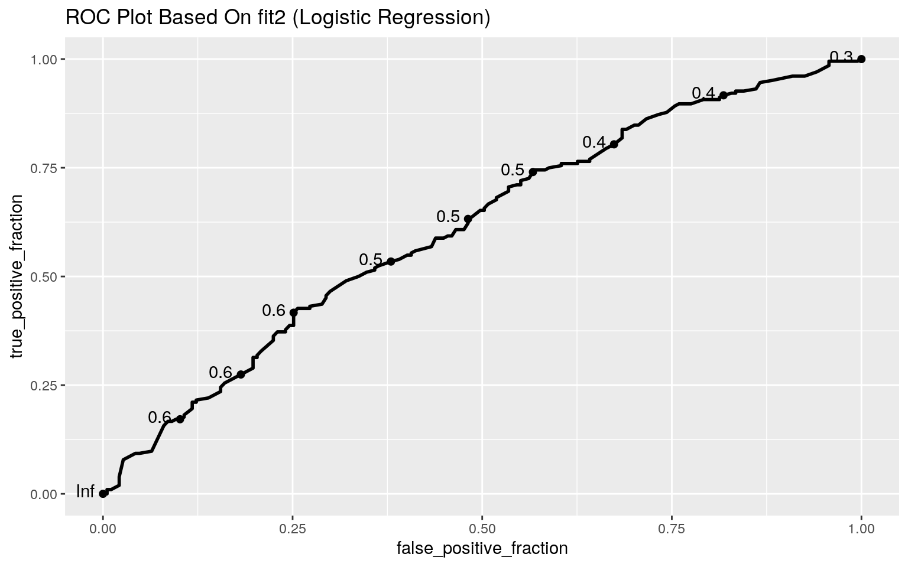

The fifth main game in Nintendo’s Animal Crossing series, Animal Crossing: New Horizons is a life simulation video game published on March 20, 2020 for the Nintendo Switch. Partially because it was released in the first few weeks of the COVID-19 pandemic and partially because it’s just super cute, the game became wildly popular in 2020 as people looked for a way to connect with friends and escape everything going on in the real world. As in previous Animal Crossing games, the player character in New Horizons “is a human who lives in a village inhabited by various anthropomorphic animals, carrying out [different] activities such as fishing, bug catching, and fossil hunting” (Wikipedia). Each villager has a personality type (linked to gender), a favorite song, and a catchphrase, along with other descriptors such as species and birthday.
On May 5, 2020, the R for Data Science TidyTuesday event used data compiled from online Animal Crossing: New Horizons databases. The villagers dataset contained information on 391 villagers available in New Horizons, including 8 new villagers such as Audie (a peppy wolf), Raymond (a smug cat who is one of the most popular villagers and has a slight cult following), and Sherb (a lazy goat).
Because the original villagers dataset did not include song data for these new villagers (or a few older ones), I looked up these villagers on Nookipedia and added their songs manually. I then separated birthday into birth_month and birth_date, created a binary variable for whether or not a villager is male, and added full birthdays back in MM-DD format. Following this, I decided to add counts (_n) of how many villagers have each species, personality type, and song. Finally, I selected my variables of interest and saved them in an order that made more sense to me.
# Import `villagers` dataset
villagers <- readr::read_csv('https://raw.githubusercontent.com/rfordatascience/tidytuesday/master/data/2020/2020-05-05/villagers.csv')
# Add missing songs
villagers$song[villagers$id == "audie"] <- "K.K. Island"
villagers$song[villagers$id == "cyd"] <- "K.K. Metal"
villagers$song[villagers$id == "dom"] <- "K.K. Country"
villagers$song[villagers$id == "judy"] <- "K.K. Lullaby"
villagers$song[villagers$id == "louie"] <- "K.K. Etude"
villagers$song[villagers$id == "megan"] <- "Forest Life"
villagers$song[villagers$id == "paolo"] <- "K.K. March"
villagers$song[villagers$id == "raymond"] <- "K.K. Cruisin'"
villagers$song[villagers$id == "reneigh"] <- "K.K. Synth"
villagers$song[villagers$id == "sherb"] <- "Hypno K.K."
villagers$song[villagers$id == "spike"] <- "Surfin' K.K."
# Create columns for `birth_month`, `birth_date`, and `male`
villagers2 <- villagers %>%
separate(col = "birthday", into = c("birth_month", "birth_date"), sep = "-") %>%
mutate(male = ifelse(gender == "male", 1, 0))
# Add birthday values back in MM-DD format
villagers2$birthday <- villagers$birthday
# Add counts of how many villagers have a `species`, `personality` type, or `song`
species <- villagers2 %>%
count(species, sort = TRUE) %>%
rename(species_n = n)
personality <- villagers2 %>%
count(personality, sort = TRUE) %>%
rename(personality_n = n)
song <- villagers2 %>%
count(song, sort = TRUE) %>%
rename(song_n = n)
villagers2 <- villagers2 %>%
left_join(species, by = "species")
villagers2 <- villagers2 %>%
left_join(personality, by = "personality")
villagers2 <- villagers2 %>%
left_join(song, by = "song")
# Select columns of interest
villagers2 <- villagers2 %>%
select(id, name, gender, male, species, species_n, birthday, birth_month, birth_date, personality, personality_n, song, song_n, catchphrase = phrase)
# Display first few rows of dataset
head(villagers2) %>%
knitr::kable() %>%
kable_classic()| id | name | gender | male | species | species_n | birthday | birth_month | birth_date | personality | personality_n | song | song_n | catchphrase |
|---|---|---|---|---|---|---|---|---|---|---|---|---|---|
| admiral | Admiral | male | 1 | bird | 13 | 1-27 | 1 | 27 | cranky | 55 | Steep Hill | 5 | aye aye |
| agent-s | Agent S | female | 0 | squirrel | 18 | 7-2 | 7 | 2 | peppy | 49 | DJ K.K. | 6 | sidekick |
| agnes | Agnes | female | 0 | pig | 15 | 4-21 | 4 | 21 | uchi | 24 | K.K. House | 5 | snuffle |
| al | Al | male | 1 | gorilla | 9 | 10-18 | 10 | 18 | lazy | 60 | Steep Hill | 5 | Ayyeeee |
| alfonso | Alfonso | male | 1 | alligator | 7 | 6-9 | 6 | 9 | lazy | 60 | Forest Life | 10 | it’sa me |
| alice | Alice | female | 0 | koala | 9 | 8-19 | 8 | 19 | normal | 59 | Surfin’ K.K. | 5 | guvnor |
I performed a MANOVA to determine whether species_n and song_n show a mean difference across levels of personality. From this, I saw that there appears to be some difference in these variables across personalities (p < 0.05). I then performed univariate ANOVAs and found that both species_n and song_n show mean differences across personality groups when considered separately. Prior to correction, significant differences in species_n across personalities were observed in pairings cranky-lazy, cranky-peppy, jock-peppy, lazy-peppy, normal-peppy, peppy-smug, peppy-snooty, and peppy-uchi. I also observed significant differences in song_n between the pairings cranky-normal, normal-smug, normal-uchi, and peppy-smug. Counting the 1 MANOVA, 2 ANOVAs, and 56 pairwise t-tests, I performed a total of 59 tests; the probability that I made at least one Type I error during this process was around 0.952. A Bonferroni correction adjusted the significance level to 0.000847. Following correction, only the difference in song_n between cranky and peppy personalities remained significant. This means there is a significant difference in the mean number of other villagers who have a favorite song (song_n) between villagers whose personalities are cranky vs. peppy.
A MANOVA assumes multivariate normality of DVs. To test this, I used the mshapiro_test in the rstatix package and found that most of the personality groups met this assumption, since I was not able to reject the null hypothesis (normality) for those groups. Another MANOVA assumption I looked at was homogeneity of within-group covariance matrices. I did this using Box’s M test and (barely) failed to reject the null hypothesis, which means the data meet this assumption. Lastly, I looked at whether the DVs had a linear relationship, since that is another MANOVA assumption. I made a plot but did not see evidence of a strong relationship in any direction; as a result, I don’t think the data meet this particular assumption.
library(rstatix)
man1 <- manova(cbind(species_n, song_n) ~ personality, data = villagers2)
summary(man1)## Df Pillai approx F num Df den Df Pr(>F)
## personality 7 0.080116 2.2832 14 766 0.004624 **
## Residuals 383
## ---
## Signif. codes: 0 '***' 0.001 '**' 0.01 '*' 0.05 '.' 0.1
' ' 1# univariate ANOVAs
summary.aov(man1)## Response species_n :
## Df Sum Sq Mean Sq F value Pr(>F)
## personality 7 402.7 57.523 2.5375 0.01457 *
## Residuals 383 8682.2 22.669
## ---
## Signif. codes: 0 '***' 0.001 '**' 0.01 '*' 0.05 '.' 0.1
' ' 1
##
## Response song_n :
## Df Sum Sq Mean Sq F value Pr(>F)
## personality 7 57.64 8.2349 2.1809 0.03515 *
## Residuals 383 1446.19 3.7760
## ---
## Signif. codes: 0 '***' 0.001 '**' 0.01 '*' 0.05 '.' 0.1
' ' 1# post-hoc t-tests
pairwise.t.test(villagers2$species_n, villagers2$personality, p.adj = "none")##
## Pairwise comparisons using t tests with pooled SD
##
## data: villagers2$species_n and villagers2$personality
##
## cranky jock lazy normal peppy smug snooty
## jock 0.2714 - - - - - -
## lazy 0.0376 0.3369 - - - - -
## normal 0.1972 0.8641 0.4220 - - - -
## peppy 8.9e-05 0.0041 0.0444 0.0058 - - -
## smug 0.4016 0.9021 0.3371 0.7844 0.0080 - -
## snooty 0.1056 0.6029 0.6677 0.7202 0.0176 0.5635 -
## uchi 0.2821 0.8271 0.6021 0.9297 0.0396 0.7634 0.8515
##
## P value adjustment method: nonepairwise.t.test(villagers2$song_n, villagers2$personality, p.adj = "none")##
## Pairwise comparisons using t tests with pooled SD
##
## data: villagers2$song_n and villagers2$personality
##
## cranky jock lazy normal peppy smug snooty
## jock 0.2598 - - - - - -
## lazy 0.2970 0.9136 - - - - -
## normal 0.0060 0.1071 0.0789 - - - -
## peppy 0.1362 0.6912 0.6097 0.2458 - - -
## smug 0.3957 0.0670 0.0772 0.0012 0.0326 - -
## snooty 0.2207 0.9219 0.8347 0.1305 0.7626 0.0553 -
## uchi 0.8124 0.2646 0.2955 0.0178 0.1592 0.6330 0.2334
##
## P value adjustment method: none1 - (0.95)^59 # probability of at least 1 Type I error## [1] 0.95150550.05/59 # adjusted significance level## [1] 0.0008474576# Test multivariate normality for each group (null: normality met)
group <- villagers2$personality
DVs <- villagers2 %>% select(species_n, song_n)
sapply(split(DVs, group), mshapiro_test) %>%
knitr::kable() %>%
kable_classic() # p < 0.05, fail to reject null, not normal: jock, peppy, uchi (3/8)| cranky | jock | lazy | normal | peppy | smug | snooty | uchi | |
|---|---|---|---|---|---|---|---|---|
| statistic | c(W = 0.973580476696048) | c(W = 0.88211761073839) | c(W = 0.946869480834507) | c(W = 0.983141466039738) | c(W = 0.929970757629554) | c(W = 0.944152529540644) | c(W = 0.952568875489497) | c(W = 0.872035835742682) |
| p.value | 0.265224597590884 | 6.28491713281405e-05 | 0.0111261161933187 | 0.585893705556838 | 0.00612144197631711 | 0.0820185745579644 | 0.0298988209362918 | 0.00576807990415056 |
# Box's M test (null: homogeneity of vcov mats assumption met)
box_m(DVs, group) # fail to reject null...barely (meets assumption)## # A tibble: 1 x 4
## statistic p.value parameter method
## <dbl> <dbl> <dbl> <chr>
## 1 31.9 0.0595 21 Box's M-test for Homogeneity of
Covariance Matrices# Linear relationships among DVs?
ggplot(data = DVs, aes(x = species_n, y = song_n)) +
geom_jitter(alpha = 0.3) +
labs(title = "Shared Song Count vs. Shared Species Count", x = "Shared Species Count (species_n)", y = "Shared Song Count (song_n)")
I then performed a randomization test to determine whether there was a mean difference in species_n (the number of villagers of the same species as an individual) across gender. My null hypothesis (H0) was that there was no mean difference in species_n between female and male villagers; my alternative hypothesis (HA) was that there was a mean difference in species_n across these two gender groups. Using observed means difference cutoffs of -0.968 and 0.968, I randomized the data and calculated a p-value as appropriate. This gave me a p-value < 0.05 (albeit only slightly), so I rejected the null hypothesis. From this, we can see that there does appear to be a mean difference in species_n between female and male villagers…it’s just not a very big difference.
# observed difference in means
villagers2 %>%
group_by(gender) %>%
summarize(means = mean(species_n)) %>%
summarize(`mean_diff` = diff(means))## # A tibble: 1 x 1
## mean_diff
## <dbl>
## 1 -0.968rand_dist <- vector() # create vector to hold diffs under null hypothesis
for(i in 1:5000) {
new <- data.frame(species_n = sample(villagers2$species_n), gender = villagers2$gender) # scramble columns
rand_dist[i] <- mean(new[new$gender == "female",]$species_n) -
mean(new[new$gender == "male",]$species_n)} # compute mean difference (base R)
# PLOT
ggplot() +
geom_histogram(aes(rand_dist)) +
geom_vline(xintercept = c(-0.968, 0.968)) +
labs(title = "Histogram of Means Difference Random Distribution")
# p-value for permutation test
mean(rand_dist < -0.968 | rand_dist > 0.968) # p < 0.05 (barely), reject null## [1] 0.042Next, I built a linear regression model predicting personality_n_c from species_n_c and song_n_c (including interaction). From the coefficient estimates, we can see that the slope for species_n_c on personality_n_c while holding song_n_c constant is -0.0415; the slope for song_n_c on personality_n_c while holding species_n_c constant is 0.6582; and the slope from the interaction of species_n_c and song_n_c is 0.0097. This model accounts for about 0.017 (1.7%) of the variation in outcome. This is due in part to some failed assumptions, including normality and homoskedasticity of residuals. The data also did not meet the assumption of linearity when considered all together, although I did see that the relationships between species_n_c and song_n_c were flat lines within each personality group; in the plots below I used geom_jitter() and adjusted transparency to make the individual points easier to distinguish.
I then recomputed results using robust standard errors. A Breusch-Pagan test verified that the residuals showed heteroskedasticity. Following correction for violations of homoskedasticity, the SEs (0.0937, 0.2492, and 0.0468) showed a slight decrease from those calculated previously (0.1048, 0.2570, and 0.0576). We can see that song_n_c, which previously had a p-value of 0.0108, now has a p-value of 0.0086; overall, the significance status (yes/no) of the variables did not appear to change after incorporation of robust standard errors.
# mean-center numeric variables
villagers2$species_n_c <- villagers2$species_n - mean(villagers2$species_n)
villagers2$personality_n_c <- villagers2$personality_n - mean(villagers2$personality_n)
villagers2$song_n_c <- villagers2$song_n - mean(villagers2$song_n)
# predict `personality_n_c` from `species_n_c` and `song_n_c` (w/ interaction)
fit <- lm(personality_n_c ~ species_n_c * song_n_c, data = villagers2)
summary(fit)##
## Call:
## lm(formula = personality_n_c ~ species_n_c * song_n_c,
data = villagers2)
##
## Residuals:
## Min 1Q Median 3Q Max
## -31.845 -1.855 3.253 6.190 10.381
##
## Coefficients:
## Estimate Std. Error t value Pr(>|t|)
## (Intercept) -0.011443 0.504638 -0.023 0.9819
## species_n_c -0.041545 0.104789 -0.396 0.6920
## song_n_c 0.658190 0.256984 2.561 0.0108 *
## species_n_c:song_n_c 0.009734 0.057637 0.169 0.8660
## ---
## Signif. codes: 0 '***' 0.001 '**' 0.01 '*' 0.05 '.' 0.1
' ' 1
##
## Residual standard error: 9.888 on 387 degrees of freedom
## Multiple R-squared: 0.01675, Adjusted R-squared:
0.009128
## F-statistic: 2.198 on 3 and 387 DF, p-value: 0.08787# plot
library(interactions)
interact_plot(fit, pred = song_n_c, modx = species_n_c)
# proportion of outcome
summary(fit)$r.sq## [1] 0.0167505# check assumptions
# linearity
villagers2 %>%
ggplot(aes(x = species_n_c, y = personality_n_c)) +
geom_jitter(aes(color = personality), alpha = 0.3) +
labs(title = "Shared Personality Count vs. Shared Species Count (Both Centered)")
villagers2 %>%
ggplot(aes(x = song_n_c, y = personality_n_c)) +
geom_jitter(aes(color = personality), alpha = 0.3) +
labs(title = "Shared Personality Count vs. Shared Song Count (Both Centered)")
# normality
resids1 <- lm(personality_n_c ~ species_n_c, data = villagers2)$residuals
ggplot() +
geom_histogram(aes(resids1), bins = 10)
resids2 <- lm(personality_n_c ~ song_n_c, data = villagers2)$residuals
ggplot() +
geom_histogram(aes(resids2), bins = 10)
# homoskedasticity
resids <- fit$residuals
fitvals <- fit$fitted.values
ggplot() +
geom_point(aes(fitvals, resids), alpha = 0.3) +
geom_hline(yintercept = 0, color = 'red')
# robust standard errors
library(sandwich)
library(lmtest)
bptest(fit) #reject H0, conclude heteroskedasticity present##
## studentized Breusch-Pagan test
##
## data: fit
## BP = 4.4531, df = 3, p-value = 0.2165coeftest(fit, vcov = vcovHC(fit)) # corrected##
## t test of coefficients:
##
## Estimate Std. Error t value Pr(>|t|)
## (Intercept) -0.0114432 0.5030634 -0.0227 0.981864
## species_n_c -0.0415452 0.0937297 -0.4432 0.657837
## song_n_c 0.6581900 0.2492434 2.6408 0.008607 **
## species_n_c:song_n_c 0.0097341 0.0468490 0.2078 0.835513
## ---
## Signif. codes: 0 '***' 0.001 '**' 0.01 '*' 0.05 '.' 0.1
' ' 1I then added bootstrapped standard errors to my model by resampling. This produced SE values of 0.1048 (species_n_c), 0.2570 (species_n_c), and 0.0576 (interaction); this model also identified song_n_c as significant (p-value < 0.05). These SE values are very close to the originals and greater than the robust SEs. Overall, the significance status (yes/no) of the variables did not appear to change with the bootstrapped standard errors.
# predict `personality_n_c` from `species_n_c` and `song_n_c` (w/ interaction)
fit <- lm(personality_n_c ~ species_n_c * song_n_c, data = villagers2)
summary(fit)##
## Call:
## lm(formula = personality_n_c ~ species_n_c * song_n_c,
data = villagers2)
##
## Residuals:
## Min 1Q Median 3Q Max
## -31.845 -1.855 3.253 6.190 10.381
##
## Coefficients:
## Estimate Std. Error t value Pr(>|t|)
## (Intercept) -0.011443 0.504638 -0.023 0.9819
## species_n_c -0.041545 0.104789 -0.396 0.6920
## song_n_c 0.658190 0.256984 2.561 0.0108 *
## species_n_c:song_n_c 0.009734 0.057637 0.169 0.8660
## ---
## Signif. codes: 0 '***' 0.001 '**' 0.01 '*' 0.05 '.' 0.1
' ' 1
##
## Residual standard error: 9.888 on 387 degrees of freedom
## Multiple R-squared: 0.01675, Adjusted R-squared:
0.009128
## F-statistic: 2.198 on 3 and 387 DF, p-value: 0.08787# bootstrapping
# repeat 5000 times
samp_distn <- replicate(5000, {
boot_dat <- sample_frac(villagers2, replace = T) # take bootstrap sample of rows
fit <- lm(personality_n_c ~ species_n_c * song_n_c, data = boot_dat) # fit model on bootstrap sample
coef(fit) #save coefs
})
## Estimated SEs
samp_distn %>% t %>% as.data.frame %>% summarize_all(sd)## (Intercept) species_n_c song_n_c species_n_c:song_n_c
## 1 0.4999339 0.09226697 0.2475462 0.04827544I fitted a logistic regression model to predict the binary variable male (0 if no, 1 if yes) from species_n and birth_month. The coefficient estimates for this model, when used to calculate odds ratios, showed that villagers with birth_months 5-12 (May-December) were more likely to be male than villagers with birth_month 1 (January); on the flip side, villagers with birth_months 2-4 (February-April) were less likely to be male than those born in January. In particular, villagers born in October were 2.006 times as likely to be male than villagers born in January. The chances of a villager being male appeared to decrease slightly as species_n increased, with an exponentiated coefficient of 0.958. This model had an accuracy of 0.586, a sensitivity (TPR) of 0.681, a specificity (TNR) of 0.481, a precision (PPV) of 0.589, and an AUC of 0.612. I created an ROC plot, which also gave an AUC of 0.612; this indicates that the model performs poorly and is only slightly better than a classifier that predicts randomly (AUC = 0.5).
library(lmtest)
# predict `male` from `species_n` and `birth_month`
fit2 <- glm(male ~ species_n + birth_month, data = villagers2, family = "binomial")
coeftest(fit2)##
## z test of coefficients:
##
## Estimate Std. Error z value Pr(>|z|)
## (Intercept) 0.332459 0.465847 0.7137 0.47543
## species_n -0.042646 0.021874 -1.9496 0.05123 .
## birth_month10 0.696225 0.494672 1.4074 0.15929
## birth_month11 0.470800 0.515298 0.9136 0.36090
## birth_month12 0.703281 0.504014 1.3954 0.16291
## birth_month2 -0.077043 0.521468 -0.1477 0.88255
## birth_month3 -0.071716 0.503819 -0.1423 0.88681
## birth_month4 -0.304471 0.526270 -0.5785 0.56290
## birth_month5 0.223529 0.510684 0.4377 0.66160
## birth_month6 0.471010 0.502061 0.9382 0.34817
## birth_month7 0.676726 0.498219 1.3583 0.17437
## birth_month8 0.676391 0.496736 1.3617 0.17330
## birth_month9 0.115306 0.505125 0.2283 0.81943
## ---
## Signif. codes: 0 '***' 0.001 '**' 0.01 '*' 0.05 '.' 0.1
' ' 1# exponentiate coefficients for interpretation
exp(coef(fit2)) %>%
knitr::kable() %>%
kable_classic()| x | |
|---|---|
| (Intercept) | 1.3943929 |
| species_n | 0.9582510 |
| birth_month10 | 2.0061651 |
| birth_month11 | 1.6012739 |
| birth_month12 | 2.0203701 |
| birth_month2 | 0.9258499 |
| birth_month3 | 0.9307948 |
| birth_month4 | 0.7375132 |
| birth_month5 | 1.2504818 |
| birth_month6 | 1.6016113 |
| birth_month7 | 1.9674254 |
| birth_month8 | 1.9667669 |
| birth_month9 | 1.1222168 |
# density plot
villagers2$logit <- predict(fit2)
villagers2 %>%
mutate(male = as.factor(male)) %>%
ggplot(aes(logit, fill = male)) +
geom_density(alpha = 0.5) +
geom_vline(xintercept = 0) +
labs(title = "Density Plot Based On fit2 (Logistic Regression)")
# confusion matrix
villagers2.1 <- villagers2 %>% mutate(prob = predict(fit2, type = "response"), prediction = ifelse(prob > 0.5, 1, 0))
classify <- villagers2.1 %>% transmute(prob, prediction, truth = male)
table(prediction = classify$prediction, truth = classify$truth) %>%
addmargins()## truth
## prediction 0 1 Sum
## 0 90 65 155
## 1 97 139 236
## Sum 187 204 391probs_for_cd <- predict(fit2, type = "response")
class_diag(probs_for_cd, villagers2$male)## acc sens spec ppv auc
## 1 0.5856777 0.6813725 0.4812834 0.5889831 0.6121684# ROC
library(plotROC)
ROCplot <- ggplot(classify) +
geom_roc(aes(d = truth, m = prob, n.cuts = 0)) +
labs(title = "ROC Plot Based On fit2 (Logistic Regression)")
ROCplot
# AUC
calc_auc(ROCplot)## PANEL group AUC
## 1 1 -1 0.6121684Finally, I fitted a logistic regression model to predict the binary variable male (0 if no, 1 if yes) from all of my remaining variables. This model had an accuracy of 0.665, a sensitivity (TPR) of 0.691, a specificity (TNR) of 0.636, a precision (PPV) of 0.675, and an AUC of 0.711. These values decreased following 10-fold cross verification (CV); in particular, AUC decreased from 0.711 to 0.517.
I used LASSO to pick out the variables birth_date, personality_n, and song_n because they produced the simplest model whose accuracy was near that of the best (by lambda.1se). A 10-fold CV performed using LASSO-selected variables yielded an AUC of 0.527, which was less than the AUC of the pre-LASSO model but (slightly) greater than that of the previous 10-fold CV. This AUC value was also worse than the one calculated for fit2 in the previous section (0.612).
# predict `male` from all the remaining variables (except `id` and `name`)
villagers3 <- villagers2 %>%
select(-id, -name, -gender, -species, -birthday, -personality, -song, -catchphrase, -species_n_c, -personality_n_c, -song_n_c)
fit3 <- glm(male ~ ., data = villagers3, family = "binomial")
coeftest(fit3)##
## z test of coefficients:
##
## Estimate Std. Error z value Pr(>|z|)
## (Intercept) 1.082430 1.165396 0.9288 0.352988
## species_n -0.042043 0.025022 -1.6802 0.092911 .
## birth_month10 0.847692 0.528277 1.6046 0.108574
## birth_month11 0.472330 0.540885 0.8733 0.382524
## birth_month12 0.683027 0.538182 1.2691 0.204392
## birth_month2 -0.085523 0.553415 -0.1545 0.877187
## birth_month3 -0.045577 0.534850 -0.0852 0.932090
## birth_month4 -0.210977 0.566425 -0.3725 0.709541
## birth_month5 0.335954 0.546661 0.6146 0.538848
## birth_month6 0.564011 0.530925 1.0623 0.288091
## birth_month7 0.857282 0.529745 1.6183 0.105600
## birth_month8 0.716250 0.523850 1.3673 0.171537
## birth_month9 0.149314 0.540559 0.2762 0.782378
## birth_date10 -0.940723 1.006708 -0.9345 0.350069
## birth_date11 -1.592268 0.988524 -1.6108 0.107234
## birth_date12 -2.208481 0.981165 -2.2509 0.024393 *
## birth_date13 -1.873847 0.970033 -1.9317 0.053392 .
## birth_date14 -2.166747 0.989558 -2.1896 0.028552 *
## birth_date15 -2.049246 0.987976 -2.0742 0.038062 *
## birth_date16 -1.903665 0.988961 -1.9249 0.054240 .
## birth_date17 -1.464935 0.973991 -1.5041 0.132568
## birth_date18 -1.816042 0.989163 -1.8359 0.066367 .
## birth_date19 -1.973377 0.981953 -2.0096 0.044469 *
## birth_date2 -2.059118 0.975790 -2.1102 0.034841 *
## birth_date20 -1.037905 1.009757 -1.0279 0.304008
## birth_date21 -1.904350 0.975121 -1.9529 0.050827 .
## birth_date22 -1.568340 0.991206 -1.5823 0.113591
## birth_date23 -1.732750 0.988037 -1.7537 0.079477 .
## birth_date24 -2.224865 0.972746 -2.2872 0.022184 *
## birth_date25 -1.940253 0.971346 -1.9975 0.045772 *
## birth_date26 -1.304800 0.984535 -1.3253 0.185073
## birth_date27 -2.212564 0.974612 -2.2702 0.023195 *
## birth_date28 -2.719911 1.037451 -2.6217 0.008749 **
## birth_date29 -0.149630 1.111503 -0.1346 0.892913
## birth_date3 -1.303177 0.959777 -1.3578 0.174530
## birth_date30 -1.439525 0.992315 -1.4507 0.146871
## birth_date31 -2.113795 1.121424 -1.8849 0.059441 .
## birth_date4 -1.611555 0.982496 -1.6403 0.100950
## birth_date5 -1.357078 0.975197 -1.3916 0.164045
## birth_date6 -1.249189 0.976337 -1.2795 0.200733
## birth_date7 -0.100914 1.105144 -0.0913 0.927244
## birth_date8 -1.794772 0.986493 -1.8193 0.068859 .
## birth_date9 -2.092699 0.957122 -2.1864 0.028783 *
## personality_n 0.024656 0.011854 2.0800 0.037523 *
## song_n -0.092872 0.059416 -1.5631 0.118032
## logit NA NA NA NA
## ---
## Signif. codes: 0 '***' 0.001 '**' 0.01 '*' 0.05 '.' 0.1
' ' 1exp(coef(fit3)) %>%
knitr::kable() %>%
kable_classic()| x | |
|---|---|
| (Intercept) | 2.9518436 |
| species_n | 0.9588282 |
| birth_month10 | 2.3342520 |
| birth_month11 | 1.6037264 |
| birth_month12 | 1.9798608 |
| birth_month2 | 0.9180322 |
| birth_month3 | 0.9554457 |
| birth_month4 | 0.8097924 |
| birth_month5 | 1.3992746 |
| birth_month6 | 1.7577094 |
| birth_month7 | 2.3567469 |
| birth_month8 | 2.0467438 |
| birth_month9 | 1.1610377 |
| birth_date10 | 0.3903456 |
| birth_date11 | 0.2034637 |
| birth_date12 | 0.1098675 |
| birth_date13 | 0.1535320 |
| birth_date14 | 0.1145496 |
| birth_date15 | 0.1288321 |
| birth_date16 | 0.1490215 |
| birth_date17 | 0.2310931 |
| birth_date18 | 0.1626682 |
| birth_date19 | 0.1389868 |
| birth_date2 | 0.1275664 |
| birth_date20 | 0.3541958 |
| birth_date21 | 0.1489194 |
| birth_date22 | 0.2083908 |
| birth_date23 | 0.1767976 |
| birth_date24 | 0.1080820 |
| birth_date25 | 0.1436676 |
| birth_date26 | 0.2712267 |
| birth_date27 | 0.1094197 |
| birth_date28 | 0.0658806 |
| birth_date29 | 0.8610267 |
| birth_date3 | 0.2716674 |
| birth_date30 | 0.2370404 |
| birth_date31 | 0.1207787 |
| birth_date4 | 0.1995770 |
| birth_date5 | 0.2574118 |
| birth_date6 | 0.2867373 |
| birth_date7 | 0.9040112 |
| birth_date8 | 0.1661654 |
| birth_date9 | 0.1233538 |
| personality_n | 1.0249622 |
| song_n | 0.9113101 |
| logit | NA |
# confusion matrix
prob <- predict(fit3, type = "response") # get predictions for every villager in the dataset
pred <- ifelse(prob > .5, 1, 0)
table(prediction = pred, truth = villagers3$male) %>% addmargins## truth
## prediction 0 1 Sum
## 0 119 63 182
## 1 68 141 209
## Sum 187 204 391# class_diag for fit3 only
class_diag(prob, villagers3$male)## acc sens spec ppv auc
## 1 0.6649616 0.6911765 0.6363636 0.6746411 0.7110465# 10-fold CV
set.seed(1234)
k = 10 # choose number of folds
data <- villagers3[sample(nrow(villagers3)),] # randomly order rows
folds <- cut(seq(1:nrow(villagers3)), breaks = k,labels = F) #create folds
diags <- NULL
for(i in 1 : k) {
## Create training and test sets
train <- data[folds != i,]
test <- data[folds == i,]
truth <- test$male # Truth labels for fold i
## Train model on training set (all but fold i)
fit <- glm(male ~ ., data = train, family = "binomial")
## Test model on test set (fold i)
probs <- predict(fit, newdata = test, type = "response")
## Get diagnostics for fold i
diags <- rbind(diags, class_diag(probs,truth))
}
summarize_all(diags,mean)## acc sens spec ppv auc
## 1 0.4987179 0.5229721 0.4652844 0.5198553 0.5179526# LASSO
library(glmnet)
y <- as.matrix(villagers3$male)
x <- model.matrix(male ~ -1+., data = villagers3) # the -1 drops intercept/ref group
set.seed(1234)
cv <- cv.glmnet(x, y, family = 'binomial')
lasso <- glmnet(x, y, family = 'binomial',lambda=cv$lambda.1se)
coef(lasso)## 47 x 1 sparse Matrix of class "dgCMatrix"
## s0
## (Intercept) -0.204196151
## species_n .
## birth_month1 .
## birth_month10 .
## birth_month11 .
## birth_month12 .
## birth_month2 .
## birth_month3 .
## birth_month4 .
## birth_month5 .
## birth_month6 .
## birth_month7 .
## birth_month8 .
## birth_month9 .
## birth_date10 .
## birth_date11 .
## birth_date12 .
## birth_date13 .
## birth_date14 .
## birth_date15 .
## birth_date16 .
## birth_date17 .
## birth_date18 .
## birth_date19 .
## birth_date2 .
## birth_date20 .
## birth_date21 .
## birth_date22 .
## birth_date23 .
## birth_date24 .
## birth_date25 .
## birth_date26 .
## birth_date27 .
## birth_date28 -0.090812713
## birth_date29 0.282668051
## birth_date3 .
## birth_date30 .
## birth_date31 .
## birth_date4 .
## birth_date5 .
## birth_date6 .
## birth_date7 0.409186039
## birth_date8 .
## birth_date9 .
## personality_n 0.005832093
## song_n -0.015669302
## logit 0.539463531# 10-fold CV using LASSO variables only
set.seed(1234)
k = 10 # choose number of folds
data <- villagers3[sample(nrow(villagers3)),] # randomly order rows
folds <- cut(seq(1:nrow(villagers3)), breaks = k,labels = F) #create folds
diags <- NULL
for(i in 1 : k) {
## Create training and test sets
train <- data[folds != i,]
test <- data[folds == i,]
truth <- test$male # Truth labels for fold i
## Train model on training set (all but fold i)
fit <- glm(male ~ birth_date + personality_n + song_n, data = train, family = "binomial")
## Test model on test set (fold i)
probs <- predict(fit, newdata = test, type = "response")
## Get diagnostics for fold i
diags <- rbind(diags, class_diag(probs,truth))
}
summarize_all(diags,mean)## acc sens spec ppv auc
## 1 0.5065385 0.5299391 0.4891302 0.5321646 0.5268355## R version 3.6.1 (2019-07-05)
## Platform: x86_64-pc-linux-gnu (64-bit)
## Running under: Ubuntu 18.04.5 LTS
##
## Matrix products: default
## BLAS: /stor/system/opt/R/R-3.6.1/lib/R/lib/libRblas.so
## LAPACK:
/stor/system/opt/R/R-3.6.1/lib/R/lib/libRlapack.so
##
## locale:
## [1] LC_CTYPE=en_US.UTF-8 LC_NUMERIC=C
LC_TIME=en_US.UTF-8
## [4] LC_COLLATE=en_US.UTF-8 LC_MONETARY=en_US.UTF-8
LC_MESSAGES=en_US.UTF-8
## [7] LC_PAPER=en_US.UTF-8 LC_NAME=C LC_ADDRESS=C
## [10] LC_TELEPHONE=C LC_MEASUREMENT=en_US.UTF-8
LC_IDENTIFICATION=C
##
## attached base packages:
## [1] stats graphics grDevices utils datasets methods base
##
## other attached packages:
## [1] glmnet_4.0-2 Matrix_1.3-2 plotROC_2.2.1
lmtest_0.9-38 zoo_1.8-8
## [6] sandwich_3.0-0 interactions_1.1.3 rstatix_0.6.0
kableExtra_1.3.4 forcats_0.5.0
## [11] stringr_1.4.0 dplyr_1.0.5 purrr_0.3.4 readr_1.4.0
tidyr_1.1.3
## [16] tibble_3.1.0 ggplot2_3.3.3 tidyverse_1.3.0
knitr_1.30
##
## loaded via a namespace (and not attached):
## [1] fs_1.5.0 lubridate_1.7.10 webshot_0.5.2 httr_1.4.2
tools_3.6.1
## [6] backports_1.2.1 utf8_1.2.1 R6_2.5.0 DBI_1.1.0
colorspace_2.0-0
## [11] withr_2.3.0 tidyselect_1.1.0 curl_4.3
compiler_3.6.1 cli_2.3.1
## [16] rvest_1.0.0 xml2_1.3.2 labeling_0.4.2 bookdown_0.21
scales_1.1.1
## [21] systemfonts_0.3.2 digest_0.6.27 foreign_0.8-71
rmarkdown_2.6 svglite_1.2.3.2
## [26] rio_0.5.16 pkgconfig_2.0.3 htmltools_0.5.0
dbplyr_2.0.0 highr_0.8
## [31] rlang_0.4.10 readxl_1.3.1 rstudioapi_0.13
shape_1.4.5 farver_2.0.3
## [36] generics_0.1.0 jsonlite_1.7.2 zip_2.1.1 car_3.0-10
magrittr_2.0.1
## [41] Rcpp_1.0.6 munsell_0.5.0 fansi_0.4.2 abind_1.4-5
gdtools_0.2.3
## [46] lifecycle_1.0.0 stringi_1.5.3 yaml_2.2.1
carData_3.0-4 debugme_1.1.0
## [51] plyr_1.8.6 grid_3.6.1 crayon_1.4.1 lattice_0.20-41
splines_3.6.1
## [56] haven_2.3.1 jtools_2.1.3 pander_0.6.3 hms_1.0.0
pillar_1.5.1
## [61] codetools_0.2-18 reprex_0.3.0 glue_1.4.2
evaluate_0.14 blogdown_0.20
## [66] data.table_1.13.6 modelr_0.1.8 foreach_1.5.1
vctrs_0.3.6 cellranger_1.1.0
## [71] gtable_0.3.0 assertthat_0.2.1 xfun_0.20
openxlsx_4.2.3 broom_0.7.3
## [76] survival_3.2-7 viridisLite_0.3.0 iterators_1.0.13
ellipsis_0.3.1## [1] "2021-05-09 18:24:41 CDT"## sysname release
## "Linux" "4.15.0-142-generic"
## version nodename
## "#146-Ubuntu SMP Tue Apr 13 01:11:19 UTC 2021"
"educcomp04.ccbb.utexas.edu"
## machine login
## "x86_64" "unknown"
## user effective_user
## "icl283" "icl283"